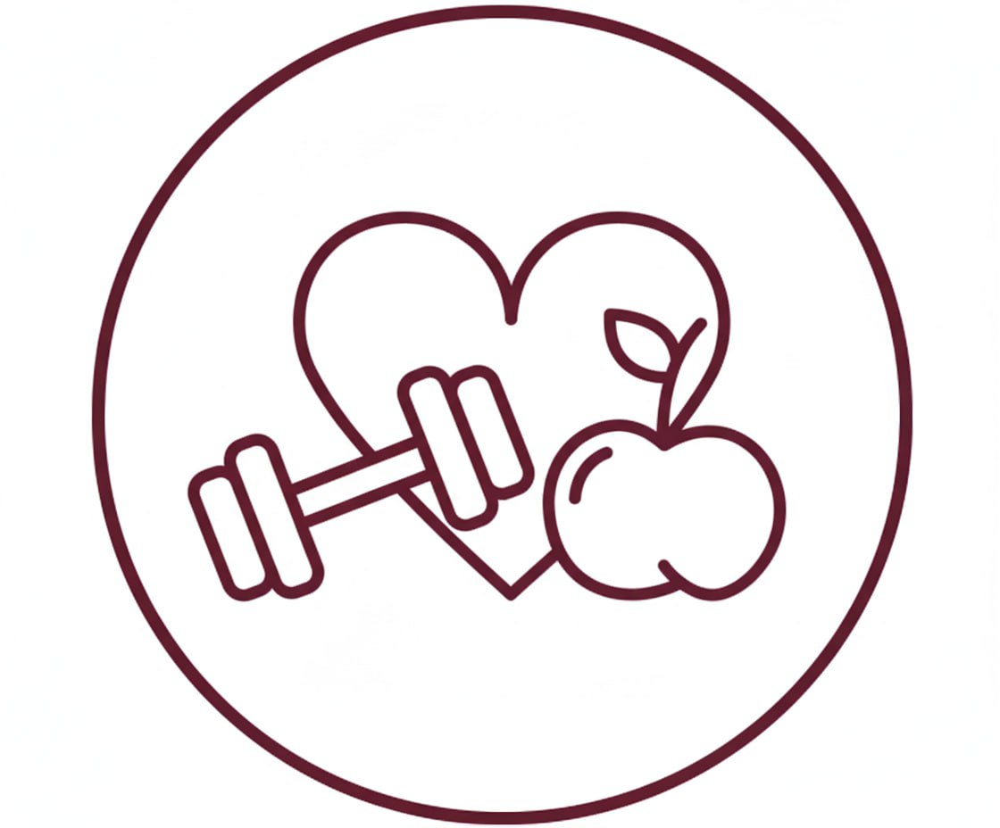

Состояние
- Анализы красивые, но вы разваливаетесь
- Утром встал — уже устал
- Жизнь между тревогой и апатией

HolisticBiteТо, что мы чувствуем и думаем, опирается на биохимию: гормоны, обмен и уровень воспаления. Поэтому работа начинается с тела, питания, дефицитов и реального образа жизни.
С уважением к телу, психике и реальности
Карта тела
Нажмите на орган, чтобы увидеть, какие привычки поддерживают его работу, а что чаще перегружает систему.
Перед консультацией
Анкету можно выбрать при записи: онлайн для заполнения за один раз или документ, если удобнее возвращаться к вопросам в несколько заходов.
Фиксируем, что не устраивает вас сейчас, и четко определяем, к чему мы хотим прийти.
Соединяем ваши симптомы с дефицитами, рационом, перенесенными операциями, приемом препаратов и биоритмами
План восстановления: питание, режим, движение, минимально необходимая нутритивная поддержка
Форматы работы
Выберите формат, посмотрите, что входит в работу нутрициолога, затем укажите удобную дату и время.
После выбора формата форма ниже сохранит ваш вариант записи.
Обратная связь